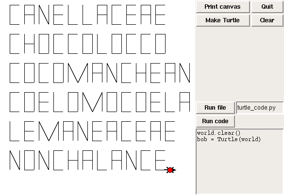
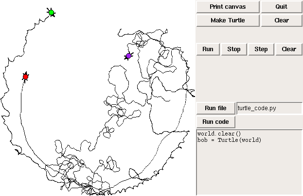

TurtleWorld
TurtleWorld is used for about half of the modules in Software Design. It is based on Logo-like turtle graphics.In the first assignment, students write functions to draw letters of the alphabet. The objective is for students to identify a set of primitive elements that can be combined to form letters, then implement the primitives as functions.
In the partial solution below, the turtle only knows the letters "acefhlnmo". In a later assignment, students write filters that search a dictionary for words that use only certain letters. Here are the longest words this turtle can type:

So in the first assignment, students see one of the important ideas in the class: multilevel interface design; that is, design that is based on a set of primitives that are used to implement intermediate functions, which are used to implement higher-level functions, and so on.
The next assignment builds on this idea, introducing generalization (adding parameters to make functions more general) and overgeneralization (writing a very general function and then writing helper functions that provide simpler interfaces to the overgeneralized function).
In a later homework, students teach the turtles to play tag:

This assignment and the next demonstrate two ways of managing concurrent agents:
- In Taggers.py, the World object invokes Turtle.step on each
Turtle, once per time step.
- In Threaders.py, each Turtle is controlled by a Thread.
After using TurtleWorld for a few weeks, students start to read the code they have been working with. In this exercise students write subclasses that inherit from Turtle and TurtleWorld, then add new features to both. This example motivates the use of inheritance to extend library code without modifying it. It is also a gentle introduction to event-driven (GUI-based) programming.
Here is part of a solution to this exercise:
class MyWorld(TurtleWorld):
def setup(self):
# canvas width and height
self.ca_width = 400
self.ca_height = 400
# make the canvas
self.canvas = self.ca(width=self.ca_width,
height=self.ca_height,
bg='white')
# make the buttons
self.fr(LEFT, fill=BOTH, expand=1)
self.bu(LEFT, text='Draw circle', command=self.circle)
self.bu(LEFT, text='Quit', command=self.quit)
self.endfr()
def circle(self):
"""this callback is invoked when the user presses
Draw Circle"""
ca = self.canvas
ca.circle(0, 0, 100, fill='red')
These exercises follow the order of presentation in How to Think Like a Computer Scientist: Learning with Python, which was written by the author of Swampy with co-authors Jeffrey Elkner and Chris Meyers. The book is available under the GNU Free Documentation License.